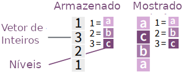

library (tidyverse)5 Fatores com FORCATS
5.1 Introdução
5.2 ESTE CAPÍTULO ESTA EM CONSTRUÇÃO !!!!
A seguir temos vários exemplos de tratamento de variáveis qualitativas o pacote FORCTAS do R.
Para saber mais sobre este pacote, acesse:
https://cran.r-project.org/package=forcats.
Aviso
Para melhor utilizar este material, é importante que você tenha uma introdução à linguagem R e saiba carregar pacotes (packages) no R. Para mais informações acesse:
Para os exemplos, iremos carregar o seguinte pacote:
- tidyverse
5.2.1 Exemplos da Folha de Referência
A maioria dos exemplos, visam ajudar na interpretação dos exemplos e funções encontradas na Folha de Referência do stringr disponível no site do RStudio.
5.3 Introdução
Fatores são estruturas de dados da linguagem R utilizadas para representar variáveis qualitativas (categóricas). Apesar de todo o suporte da linguagem para este tipo de dados, o pacotes forcats facilita muito este trabalho, principalmente quando precisamos definir níveis, alterar sua ordem, etc.
Para uma breve explicação do que são variáveis qualitativas, também chamadas de categóricas, veja a seção: Tipos de Variáveis.
5.4 Fatores
A linguagem R representa dados categóricos através de um tipo de dados chamado Fator (factor). Um fator é um vetor de inteiros com um atributo de nível (level) associado à ele. Este nível armazena um conjunto de mapeamentos entre o inteiro e o valor categórico. Quando você visualiza um fator, o R não mostra os inteiros, mas sim, os níveis associados à eles.

5.4.0.1 factor
Use esta função para criar um fator.
f <- factor(c("a", "c", "b", "a"), levels = c("a", "b", "c"))
f[1] a c b a
Levels: a b cNo exemplos acima, criamos um fator à partir de um vetor (a,b,c,a) e definimos os níveis 1, 2 e 3 como “a,b,c”.
Nota
Se os níveis de um fator não forem especificados, o R irá pegar os caracteres únicos do vetor e colocá-los em ordem alfabética.
f <- factor(c("a", "c", "b", "a"))
f[1] a c b a
Levels: a b c5.4.0.2 as_fator
Podemos também converter um outro tipo de dado para fator utilzando a função as_factor.
vetor <- c("a", "b", "c", "a")
as_factor(vetor)[1] a b c a
Levels: a b c5.4.0.3 levels
Use para retornar ou definir os níveis de um fator.
# para retornar os níveis:
levels(f)[1] "a" "b" "c"# Para definir os níveis:
levels (f) <- c("x", "y", "z")
f[1] x z y x
Levels: x y zlevels (f) <- c("a", "b", "c")
f[1] a c b a
Levels: a b c5.5 Inspecionando Fatores
5.5.0.1 fct_count
Use para contar os valores de cada nível.
fct_count(f)5.5.0.2 fct_match
Use para encontrar níveis.
fct_match(f, "a")[1] TRUE FALSE FALSE TRUE5.5.0.3 fct_unique
Use para retornar valores únicos de um fator, removendo os duplicados.
fct_unique(f)[1] a b c
Levels: a b c5.6 Combinando Fatores
5.6.0.1 fct_c
Use para combinar fatores com níveis diferentes.
f1 <- factor(c("a", "b", "c"))
f2 <- factor(c("b", "a"))f1[1] a b c
Levels: a b cf2[1] b a
Levels: a bfct_c(f1,f2)[1] a b c b a
Levels: a b c
Dica
Use fct_cross() para criar um fator à partir de dois ou mais fatores, gerando níveis para todas as combinações possíveis.
5.6.0.2 fct_unify
Use para padronizar os níveis à partir de uma lista de fatores.
list(f1, f2)[[1]]
[1] a b c
Levels: a b c
[[2]]
[1] b a
Levels: a bfct_unify(list(f2, f1))[[1]]
[1] b a
Levels: a b c
[[2]]
[1] a b c
Levels: a b cVeja que no exemplo acima, os níveis de ambas as listas possuem os mesmos valores.